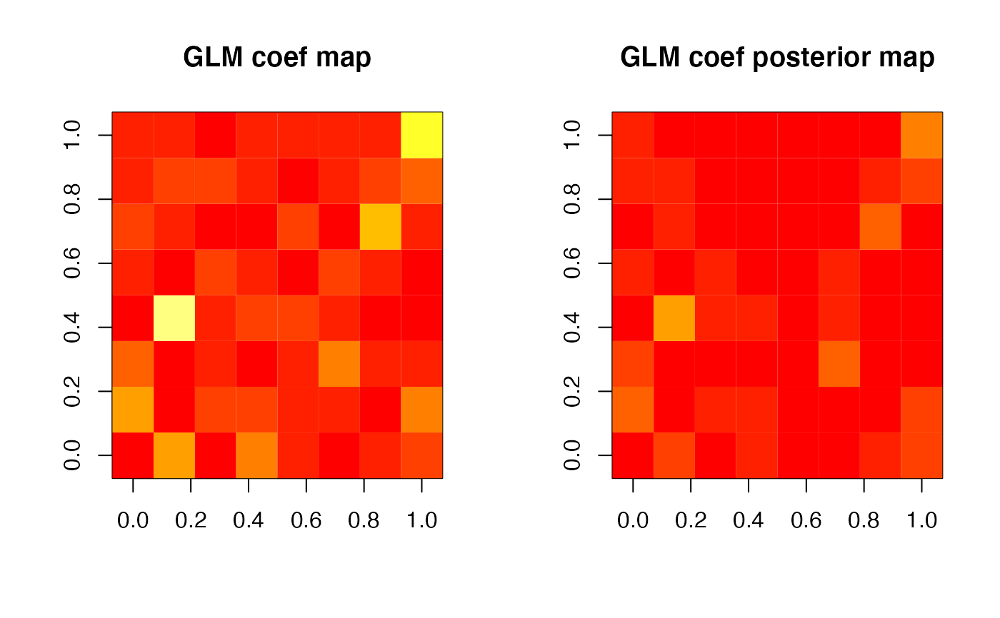

BHMSMA.RdBHMSMA is the main function that performs BHMSMA (Sanyal & Ferreira, 2012) of fMRI data, or other multiscale data, using wavelet-based prior that borrows strength across subjects and provides posterior smooth estimates of the effect sizes. Specifically, BHMSMA constructs a 2D regression coefficient map (e.g., corresponding to a single brain slice) of a given regressor and returns its posterior smoothed version based on multi-subject or single subject analyses.
BHMSMA(n, grid, data, designmat, k, analysis="multi",
truecoef=NULL, wave.family="DaubLeAsymm", filter.number=6,
bc="periodic")Number of subjects.
The number of voxels in one row (or column) of the brain slice of interest. Must be a power of 2. The total number of voxels is grid^2. The maximum value of grid for this package is 512.
The data in the form of an array with dimension (n,grid,grid,ntime), where ntime is the size of the time series for each voxel. The rows (first dimension) must correspond to n.
The design matrix used to generate the data. The rows must correspond to n. It should include an intercept column if desired. No intercept column will be added by the function. The GLM fit will include all the columns of designmat.
Index of the regressor chosen for analysis, consistently with designmat. After fitting GLM, the regression coefficients of this regressor will be considered for the rest of the analysis.
"MSA" or "SSA", depending on whether performing multi-subject analysis or single subject analysis.
If available, the true GLM coefficients in the form of an array with dimension (n,grid,grid). NULL by default.
The family of wavelets to use - "DaubExPhase" or "DaubLeAsymm". Default is "DaubLeAsymm".
The number of vanishing moments of the wavelet. Default is 6.
The boundary condition to use - "periodic" or "symmetric". Default is "periodic".
A list containing the following.
An array of dimension (n,grid,grid), containing for each subject the standardized GLM coefficients obtained by fitting GLM to the time-series corresponding to the voxels.
An array of dimension (n,grid,grid), containing for each subject the estimated standard errors of the GLM coefficients.
A matrix of dimension (n,grid^2-1), containing for each subject the wavelet coefficients of all levels stacked together (by the increasing order of resolution level).
A vector containing the estimates of the six hyperparameters.
Estimated covariance matrix of the hyperparameters.
A matrix of dimension (n,grid^2-1), containing the piklj.bar values (see Reference for details).
A matrix of size (n,grid^2-1), containing for each subject the posterior mean of the wavelet coefficients of all levels stacked together (by the increasing order of resolution level).
An array of dimension (n,grid,grid), containing for each subject the posterior means of the standardized GLM coefficients.
MSE of the posterior estimates of the GLM coefficients, if the true values of the GLM coefficients are available.
The wavelet computations are performed by using the R package wavethresh.
Sanyal, Nilotpal, and Ferreira, Marco A.R. (2012). Bayesian hierarchical multi-subject multiscale analysis of functional MRI data. Neuroimage, 63, 3, 1519-1531.
# BHMSMA multi-subject analysis for simulated (fMRI)
# data at 4 timepoints over an 8x8 grid (of a brain
# slice) for 3 subjects
set.seed(1)
n <- 3
grid <- 8
ntime <- 4
data <- array(rnorm(n*grid*grid*ntime),
dim=c(n,grid,grid,ntime))
designmat <- cbind(c(1,1,1,1),c(1,0,1,0))
k <- 2
analysis <- "multi"
BHMSMAmulti <- BHMSMA(n, grid, data, designmat,
k, analysis)
zlim = c(0,max(abs(BHMSMAmulti$GLMCoefStandardized)))
par(mfrow=c(1,2))
image( abs(BHMSMAmulti$GLMCoefStandardized[1,,,k]),
col=heat.colors(12),zlim=zlim,main="GLM coef map")
image( abs(BHMSMAmulti$GLMcoefposterior[1,,]),
col=heat.colors(12),zlim=zlim,main="GLM coef posterior map")

if (FALSE) {
# BHMSMA multi-subject analysis for simulated (fMRI)
# data at 100 timepoints over an 64x64 grid (of a
# brain slice) for 15 subjects
# (takes ~12s in a 2.8 GHz Quad-Core Intel Core i7 processor)
set.seed(1)
n <- 15
grid <- 64
ntime <- 100
data <- array(rnorm(n*grid*grid*ntime),
dim=c(n,grid,grid,ntime))
designmat <- cbind(rep(1,ntime),runif(ntime))
k <- 2
analysis <- "multi"
system.time({BHMSMAmulti <- BHMSMA(n,grid,data,
designmat,k,analysis)})
}